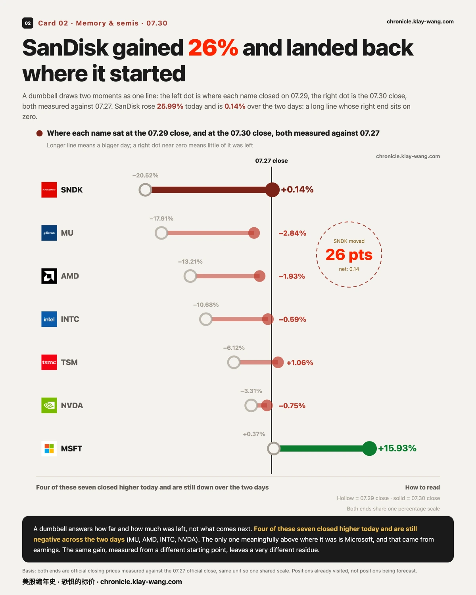
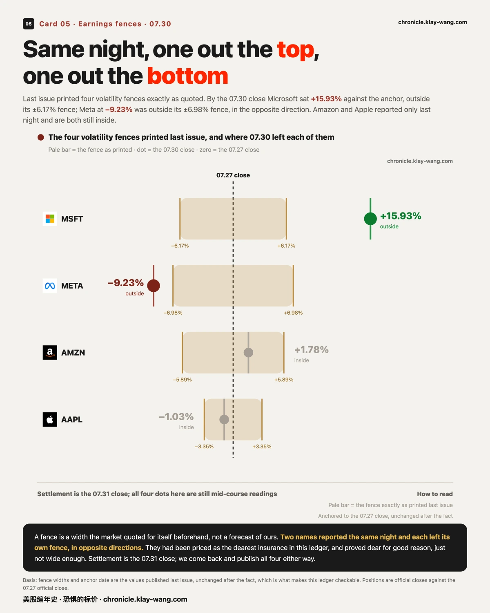
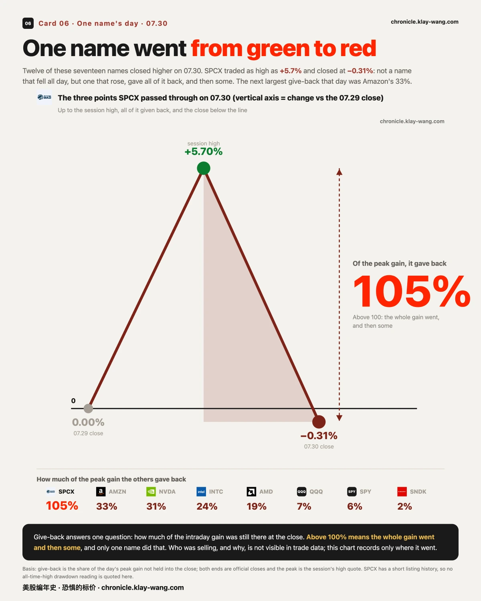

微软一天市值增加4500亿美元，美股有史以来最大 · 07-30 · 7.27-7.31
• 历史第一：微软单日市值多出约 4500 亿美元：相当于一天涨出一个英特尔
• 存储暴涨：闪迪一天 +25.99%，两天算下来只剩 +0.14%
• 强平：管理过约 450 亿美元的 AI 基金被迫把公开持仓转给 Citadel，4 倍杠杆没能活到 07.30 的反弹
07.30 早上八点半，三份数据同时落地：二季度的增长初值、六月的核心通胀、还有每周的失业申请。等开盘铃响，价格已经把该定的大半都定完了。
这一期比平时多一层东西。我们的方法一直是：不预测，只应对。价格告诉我们结果，资金告诉我们为什么。 下面每一段都先给结果，再给资金面的解释，以及一个可以拿去验证的条件。
涨了四分之一，回到原点
一句话：这一天最大的涨幅，正好落在最深的坑上，抵消之后什么也没剩下。
闪迪收涨 25.99%。把起点往回挪两个交易日，它对 07.27 的收盘只剩 +0.14%。美光涨了 18.36%，两天算下来还是 −2.84%。
七只里有四只是同一个形状：今天收涨，两天算下来仍是负的。唯一实质站上两天前的是微软，+15.93%，而那是财报给的，不是这轮反弹给的。
同样的涨幅，落在不同的起点上，剩下的东西完全不同。
这种日子的期权账本长什么样，留一笔。闪迪收在 1279.96，离 1280 差 4 美分；到期日就在下一个交易日的 1280 看涨，前一天收盘 3 块钱，07.30 收在 58.2，一天 +1840%。买它的人赌对了幅度，可正股最后停在行权价脚下 4 美分：58 块里没有一分钱是已经到手的，全部是对下一个交易日的定价。彩票的另一面照例写上：同一条链上更高的档位，多数会在到期时归零。这不是可以抄的作业，是杠杆的众生相。

强平的钱，和接手的钱
一句话：这轮存储过山车，昨天补上了资金面最重的一块拼图：有人用 4 倍杠杆，把一个论点变成了一张强平单。
据 Bloomberg 与 CNBC 07.30 报道：管理规模一度达约 450 亿美元（比整个 Coinbase 的市值还大）的 AI 对冲基金 Situational Awareness，被迫把全部公开股票持仓转给 Citadel。七月这轮 AI 与存储链的回撤打在 4 倍杠杆上，三家主经纪商的追加保证金通知接踵而至；资产缩到约 100 亿美元，其中约一半是没法被强平的 Anthropic 私股。
时间线里最扎眼的一处：转手前六天，基金创始人还在给投资人写信，说眼下的吸引力是 2025 年初以来少见的，邀请大家 08.01 前追加资本。他的论点甚至可能是对的：07.30 存储全线暴涨。但那一天，这批筹码已经不在他手里了。杠杆改变的从来不是你对不对，是你能不能活到对的那天。
这单交易和 07.30 的盘面能连上，逻辑有三步。第一步：七月存储跌得那么深的那几天，市场一直悬着一个问号，有一个几百亿的杠杆盘随时可能被迫往外倒货，接谁谁被砸，这种预期本身就在压着价格。第二步：现在知道了收尾方式，整个组合以协议方式一次性转给了 Citadel，没有继续往盘面里倒。悬在头上的卖单，用一个价格整体消化掉了。第三步：压价的来源消失之后，买盘不需要吃掉巨量对手单就能把价格推得很远。这正好对上我们量到的两件事：闪迪那 26% 里有 12.77% 是开盘之后一路走出来的，而同一时段大盘几乎没动。至于是不是接手方在盘中补头寸，成交数据看不见，这一步我们不认领；前三步是站得住的。
大盘涨的那一截，开盘前就给了一多半
一句话：跳空是隔夜定的价，盘中才是有人一笔一笔买出来的。
SPY 全天 +1.68%，其中 +0.90% 是开盘前的跳空，开盘之后只走了 +0.77%。QQQ 也一样，+3.30% 里有 +1.97% 是跳空。
存储和半导体正相反。闪迪那 26% 里，+12.77% 是开盘后才走出来的；美光 +10.33%，英特尔 +5.41%。
同一天里，指数和存储的涨来自完全不同的时段。谁在买、为什么买，成交数据里看不见，这里也不编。
资金面读法：钱在为什么付费。 期权是唯一能看见有人拿真金白银下注的地方，昨天最值得进账本的一笔在指数上：SPY 的 09.04 到期，两侧同一天冒出新单，现价上方 6.6% 的看涨成交 3075 张（隔夜持仓只有 896 张），下方 8.6% 的看跌 2145 张（隔夜 514 张）。这个形状拆三层看。为什么不是方向单：押方向的人不会同一天在两侧都付钱。为什么不是随手对冲：到期日挑得很刁，跳过了整个八月的周度到期，正好钉在 09.04，查日历，那天是八月非农的发布日。为什么说需求是真的：昨天盘前 SPY 的保险价本来就排在近三年的八成分位上，贵着也买，比便宜时顺手买说明的东西多。三层合起来，这更像有人在为九月初的事件窗买波动敞口：赌的不是涨或跌，是非农那一带价格不会停在原地。是仓位还是过路的钱，07.31 的隔夜持仓那一栏自己会说话。
排除完指数，再看一笔怪的：英特尔出现一组 1 比 3 比 3 比 1 的深度实值四腿，行权价低到现价四分之三以下、1 天到期。先想想谁不会买它：想赌方向的人不会，因为这种合约几乎等同持股、却要为此多付两成的价钱，杠杆为零；想赌波动的人也不会，它对波动几乎没有敏感度。排除掉这两类，剩下的用途全在机构的后台：挪仓、合成持股、结构单的腿。四条腿的量比整齐到 2406 对 2404 只差 2 张，也更像一笔单子拆出来的，不像四拨人撞在一起。这条不用猜，07.31 的隔夜持仓自己会开奖：昨天那两档隔夜只有 7 张和 8 张，结构单会把它顶到千级，纯换手则一动不动。
三把尺子，都把英伟达排在最后
一句话：一把尺子说明不了什么，三把互不共用中间量的尺子指向同一个位置，就不再是噪音。
第一把是当日收盘涨幅：英伟达 +2.65%，低于同日 QQQ 的 +3.30%。第二把是开盘之后自己走出来的那一截：+0.89%，而闪迪是 +12.77%。第三把是收盘吐回了日高涨幅的多少：英伟达吐回 31%，是这批半导体里最多的。
三把尺子彼此不共用任何一个中间量。在存储涨到两位数的这一天，英伟达连指数都没跑赢。
这只是位置的记录，成交数据不解释原因。但资金面能回答另一个问题：市场把这个掉队当成了什么。对照同一天真实的担心长什么样：苹果当晚交财报，08.07 到期、贴着现价的看跌一天成交 4800 张，隔夜持仓只有 586 张，付的是实打实的保护钱。而英伟达那边，虽然也有看跌在换手，位置却在低于现价四成的深处，单价是零头级。同样是买保险，一个买在家门口，一个买在天边：市场把英伟达读成掉队，没读成出事。07.31 若贴价保护也放起量来，这句收回。

围栏中途：一个走出上栏，一个走出下栏
一句话：围栏是事前市场自己标出来的宽度，不是我们的预测。
上一期我们把四道波动围栏原样印了出来。到 07.30 收盘，微软对锚价 +15.93%，站在 ±6.17% 那道栏之外；Meta −9.23%，落在 ±6.98% 那道栏之外，方向相反。
事前它们被排成这本账里最贵的两条保险。事后证明贵得有道理，只是仍然不够宽。
亚马逊与苹果 07.30 盘后才交卷，眼下都还在栏内。结算日是 07.31 收盘，四张我们都会回来对账，落栏内还是栏外都照记。
围栏之外，微软的资金面还有一笔。涨完 15% 之后，08.07 与 08.10 到期、450 一线的看跌冒出从几乎零持仓建起来的一条带：其中一档隔夜只有 1 张，昨天成交 2580 张。涨完反而铺看跌，先把最顺嘴的解释排除掉：如果只是有人趁保险贵了出来收租，他不需要同一天在上方也动手，而昨天 470 与 480 的看涨各有几千张新量，和这条看跌带同日出现。下有看跌、上有看涨、中间夹着一只刚重估了 4500 亿美元的正股，无论每条腿的买卖方向怎么配，这一族形状的共同点都是围绕新价位重新布防，而不是对方向下注。450 恰好是收盘价脚下的第一个整数位，市场在给新市值找地板的位置，这个选择本身也是信息。07.31 的隔夜持仓会告诉我们这套布防是真扎营还是一日游。

全场只有它，从涨的一边走到了跌的一边
一句话：涨出来那一截，收盘时还剩多少，是另一个问题。
这一天 17 只票里有 12 只收涨。SPCX 盘中一度涨到 +5.7%，收盘却是 −0.31%。它不是全天下跌，是先涨上去、再全部吐掉、还多跌了一截。
吐回比例超过 100% 的，当日仅此一只。第二高的是亚马逊的 33%。

有史以来最大的一天，来自一份财报
一句话：同样大小的一天，来路可以完全不同。
微软 07.30 一天多出约 4500 亿美元市值，是有记录以来最大的单日增量，把去年关税暂停日的英伟达（约 4400 亿）挤到了第二。
4500 亿是什么概念：几乎恰好是一整个英特尔（07.30 收盘约 4550 亿），也够买 1.2 个可口可乐（3807 亿）、1.6 个阿里巴巴（2790 亿）。第二名英伟达那天多出来的，则差不多是一个美国银行（4401 亿）。市值都取 07.30 收盘，已双源核对。

把前十排出来会看到另一件事：第二、第四、第九名都是 2025.04.09 那一天。那天标普涨 9.5%，是所有人一起被抬起来的。而排第一的 07.30，标普只涨 1.68%。
四千五百亿，几乎全部来自一家公司自己的账。

🏛 同一份发布，两个方向
一句话：同一天同一份数据，按你取哪个口径，可以读出完全不同的图景。
二季度的增长初值 1.5%，低于预期；可占经济三分之二的消费，折成年率 +3.2%，远高于预期。物价那一侧也一样：六月单月的核心物价是 2025 年 3 月以来最温和的一次，而同一份发布里，二季度的物价指数升到了 5.1%。
月度与季度指向相反的方向。这不是谁算错了，是两个口径在回答两个问题。
🌡 温度计：71 / 100
我有个恐惧温度计，量的就是市场现在花多少钱，给未来一年买保险。保险越贵，说明市场越怕。
今天读数 71（满分 100），意思是这份保险贵到了过去三年的前 29%。
昨天这个数还是 88。一天之内，为明年买保险的价钱便宜了一大截，而这一天指数其实是涨的。保险变便宜，通常发生在卖保险的那批人认定：刚过去的那件事，已经过去了。它不告诉你接下来会怎样，它只告诉你：天天跟恐惧做买卖的那批人，今天把价钱调回来了。
结构上还有两件事，解释这几天的行情为什么总是大开大合。其一：三只票收在了自己的看涨期权墙之上（闪迪高出 28%、英特尔 30%、美光 9%）。
墙是期权账本上大家堆钱最多的价位，像路边的护栏；收在墙上方，等于车开出了有护栏的路段。这不是说车会继续往前开，是说上面暂时没人卖保险、没有新的参照物。其二：两个指数收盘仍在各自的伽马翻转线下方。这条线以上，做市商的对冲是顶着市场走的，波动被压小；线以下，对冲变成追着市场跑，涨跌都会被放大。
17 只票的日高挤在同一个小时（07.29）、隔夜跳空占掉指数涨幅的一多半（07.30），都是这个结构的产物。
方向我们不猜；振幅被放大，是当下可以拿去核对的结构事实。

本站不提供投资建议，不预测方向，不做择时。